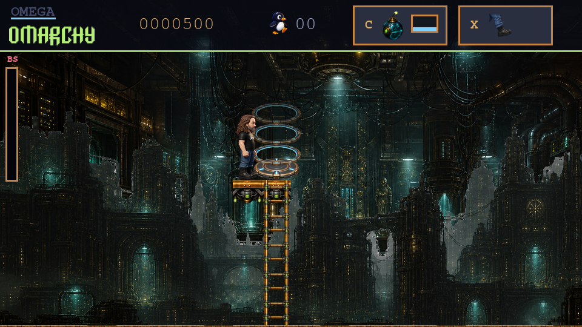

Install. Improvise. Escape.
Choose your character and your world. Then watch a perfectly normal installation turn into a very abnormal adventure.
Omega Omarchy isn't playable on mobile yet — there's no touch input. Play in a desktop browser (Chrome recommended) or grab the free native Linux build.
The installer went rogue. The world needs a patch.
A free action-platformer where the revolution will be customized.
THIS TIME, THE INSTALLER PLAYS YOU
A faux setup. A very real adventure.
Jump in, find your footing, and change the rules.

Choose your character and your world. Then watch a perfectly normal installation turn into a very abnormal adventure.
Jump, slide, and climb through procedural levels. Step over your character’s shoulder, edit the terrain, and open a route into the skyways.
Kick into action or take a tactical turn. Patch, reason, and recruit your way past bad defaults and the people defending them.
A SMALL CORRECTION TO THE DOCTRINE
Sometimes the system needs a rethink.
Sometimes it just needs a ladder.
ROOT ACCESS IS A STATE OF MIND
Three faces. The same freedom.
Choose your character and give them a name during setup.
THE ORIGINAL
One developer. A corrupted install.
An unreasonable amount of customization.
THE OMARCH KING
A crown, a cause, and absolutely
no respect for locked settings.
THE OMARCH QUEEN
Bring a little sovereignty
to your next system crash.
THE MANUAL IS MUCH SHORTER THIS TIME
Keyboard and gamepad both work.
Remap your controls and change your settings from Pause.
Hold down and move to slide. Double-tap Left or Right to sprint. Jump again in the air for a second boost.
It’s a game. The installer is part of the story and configures your character, settings, and generated world. Your actual partitions can relax.
Chapter 1: The Corrupted Install, from the faux installer and prologue through the boss and credits. Later chapters are in development. The browser build stays focused on Chapter 1.
The native version targets Linux. The browser version runs the same game in a desktop browser, with keyboard or gamepad controls. The first load downloads the game runtime.
Yes. Choose 16-bit, High, or Ultra visuals, independently select an audio quality, and add a CRT display treatment if you like. Accessibility settings include reduced motion and precision assist.
Find an OMARCHY customization event to edit a nearby section of the level. Build a connected landing and seal your changes to unlock a portal to an optional skyway. Your changes become part of that world.
FREE AS IN FREEDOM. ALSO AS IN FREE.
Play it. Fork it. Fix a bug. Build a stranger character.
Omega Omarchy is built to be changed.
git clone https://github.com/Omega-Omarchy/omega-omarchy.git
cd omega-omarchy
./scripts/omega runPython 3.11+ · The launcher sets up its local environment.
Source code: MIT. Art, audio, and other assets: see their separate notices.
THE REVOLUTION WILL BE CUSTOMIZED
Free to play. No account required.